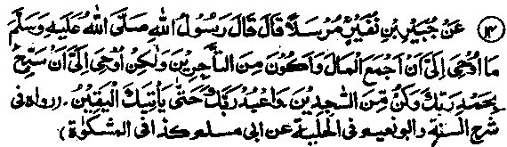
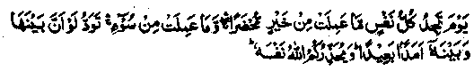
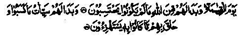

Chapter Six · Section (d): Ahadith on the foregoing subjects (concerning the excellence of Tawakkul)
Hadith 14

Rasulullah Sallallaho alaihe wasallam is reported to have said, "Allah Ta‘ala has not sent me any revelation commanding me to become a merchant and amass wealth. What He has revealed to me is, ‘O Muhammad, hymn the praise of your Lord and be among those who prostrate before Him; And keep worshipping your Lord till the inevitable (death) comes unto you’.
Note: The revelation referred to in this Hadith is the last Ayat of Surah al-Hijr. The Hadith has been related through different chains of narration, by many Sahabah Radhiallaho anhum. Allama Suyuti Rahmatullah alaihe has narrated it in his book, Durre Manthur, on the authority of Abdullah Ibne Mas'ud, Abu Dardaa Radhiallaho anhuma. and Abu Muslim Khaulani Rahmatullah alaihe. Another Hadith says that once Rasulullah Sallallaho alaihe wasallam said, "The best among men are two: the one who goes in the path of Allah, holding the bridle of his horse, seeking a chance of sacrificing his life; and the other who owns a few goats and lives unknown in a forest or on the hillside (where one can live in peace), observes Salaat, pays Zakaat and remains engaged in worshipping his Lord,till death comes to him and people receive nothing from him but that which is good". (Durre Manthur)
Those who have studied the life history of Rasulullah Sallallaho alaihe wasallam know how he acted upon this commandment of Allah Ta‘ala, till he left the world. When Allah Ta'ala increased his blessings upon him, he exerted himself more diligently in his devotions. Aishah Radhiallaho anha. relates that when Surah al-Fath was revealed, Rasulullah Sallallaho alaihe wasallam began to exert himself more diligently in his devotions. Someone asked him, "O Rasulullah, this Ayat of Surah testifies that Allah Ta'ala has forgiven all your former and latter lapses, but still you take pains and exert yourself in devotions’. He replied, "Should I not be a grateful bondsman’.
Abu Hurairah Radhiallaho anho narrates that when Surah al-Fath was revealed, Rasulullah Sallallaho alaihe wasallam began to spend such long hours in ‘Nafl’ Salaat that his feet became swollen, and he increased his worship so much that he grew weak and thin like an old and dried water-skin. When he was asked why he took such pains, He replied, “Should I not be a grateful servant? Hasan Rahmatullah alaihe said that Rasulullah Sallallaho alaihe wasallam was so diligent in devotions that he had become weak like a dried old water-skin. He then mentioned someone else asking the same question and receiving the same reply. Abu Juhaifah says that Rasulullah Sallallaho alaihe wasallam used to stand in Salaat so long that his feet had become cracked. Anas says that Rasulullah Sallallaho alaihe wasallam stood in Salaat so long that his feet became swollen.
There are many Ahadith to the same effect, and most of them relate that people were surprised at his diligence in devotions and asked him why he took so much trouble, in spite of the fact that Allah Ta'ala had given him a categorical assurance of forgiveness in the Holy Qur’an, to which he replied, “Should I not be a grateful bondsman?’(Durre Manthur)
Have we ever thought of offering two brief Rak'aat of Salaat, in gratitude to Allah Ta'ala for doing us a special favour? There are numerous Ahadith which relate that, when Rasulullah Sallallaho alaihe wasallam got news of a victory or heard of anything that delighted him, he would make a Sajdah in gratitude to Allah Ta'ala. Notwithstanding all this devotion, he had such fear of Allah Ta'ala that, as Imaam Bukhari Rahmatullah alaihe has related it, he once said,"I swear by Allah! I swear by Allah that I do not know, though I am a Rasul of Allah Ta'ala, what He will do with me or with you, on the Day of Judgment' (Mishkaat) I do not know’ means; I am unaware of the circumstances we shall have to face on the. Day of Judgement, because Allah Ta'ala, the Sovereign with absolute power, has every right to do with people as He wills.
It occurs in a narration that Umme Dardaa Radhiallaho anha asked her husband, "Why is it that you do not go after money, as so and so does? (He earns money; you do not bother about it)". Abu Dardaa Radhiallaho anho replied, I have heard Rasulullah Sallallaho alaihe wasallam saying, “In front of you would be a difficult valley on the Day of Resurrection, and those who have a heavy burden will be required to render an account of all their worldly possessions, and they will not be able to do it easily. I, therefore, want to have a light burden i.e. I do not want to be involved in things of which I might have to render an account, so that I may easily pass through this valley." (Mishkaat)
These great people felt extremely afraid of what might happen to them on the Day of Judgement and, therefore, they were greatly concerned about the Akhirah and remained ever busy preparing for it. We, on the contrary, are constantly worried about this world and never for once think of the difficult valley referred to in the Hadith. They say that once Hassaan bin Sinaan Rahmatullah alaihe was going somewhere when he saw a house which had not been there before. He asked, “When was this house built?" But instantly he thought better of it and began to admonish himself saying, “Why did you ask this idle question? It is no concern of yours when the house was built. Now you will have to do penance for that and fast for a year”. And he fasted for one complete year to atone for indulging in useless talk.
Maalik Ibne Zaigham Radhiallaho anho relates: Once Rabaah Qaisi Rahmatullah alaihe came to visit us after Asr Salaat and asked whether my father was at home. On being told that he was asleep, the Sheikh said, "Is this the time for sleep ", and went away. I sent a man after him with the word that, if he liked, I would wake him up, but before he could catch up with him, the Sheikh had entered a graveyard and was admonishing himself thus, "You said,’ Is this the time for sleep?’. What did you mean by it? Everybody is free to go to bed when he likes. How do you know that such and such time was not suitable for him to sleep? I swear by Allah that I shall not allow you, for a year, to lie on the ground to deep, unless you fall ill or go mad; for in that case, I shall be helpless. Woe to you! How long will you go on upbraiding others? What a pity, you refuse to mend your ways!" He went on talking in this vein, weeping and crying in bitter remorse. When the man saw him in this state, he could not take courage to speak to him and came back.
Talha Radhiallaho anho says that once a Sahabi took his clothes off and began to roll himself on the burning sand of the desert He was saying to himself, “Taste it and know that Jahannam is far hotter than this. You lie sleeping at night like the dead, and while away your time by day? Rasulullah Sallallaho alaihe wasallam saw him in this condition and went over to him. He submitted, “O Rasulullah, I felt within myself an urge to do like that I can say no more’! Rasulullah Sallallaho alaihe wasallam said, “You need not have done that; all the gates of the heavens have been opened for you and Allah Ta‘ala is speaking proudly of you to the angels’’ He then said to the Sahabah, "Take your share of blessings from your brother;‘and they asked him to make Du‘aa for all of them. And Rasulullah Sallallaho alaihe wasallam also advised him to make Du‘aa for them.
Huzaifah Ibne Qatadah Radhiallaho anho says that someone asked a saint, “What do you do when your ‘Nafs’ (carnal self) desires to have something?“He replied, T abhor my ‘Nafs’ more than anyone else in the world. How can I fulfil the desire of one whom I regard to be my worst enemy.” They relate that once Mujammi happened to look towards the roof of a house and his eyes fell on a non-‘Mahram’ lady (a ‘Mahram’ is a blood relation not within permissable marriage limits). He thereupon swore that he would not raise his head to look up as long as he lived.
There are many other incidents about these pious beings, narrated by Imaam Ghazaali Rahmatullah alaihe, which describe how severely they punished themselves for the slightest lapse. The reason was that they were afraid of the perils of the ‘difficult valley’ about which Abu Dardaa Radhiallaho anho was talking to his wife. But we, today, seem to assure ourselves that the Sahabah alone would have to cover this ‘difficult valley’ and we shall fly over it by ‘plane’. We are doing a grievous wrong to our own souls and neven for a moment think of the ‘difficult valley’ lying before us.
After narrating the anecdotes, Imaam Ghazaali Rahmatullah alaihe writes: "Strangely enough, you punish your servants and your children when they do anything wrong and say to yourself; ‘If I do not punish them, they will become disobedient and rebellious. But you do not care for your ‘self and'never fear that it is growing rebellious. Don’t you know that rebelliousness in others is not going to do you as much as,harm as rebelliousness of your awn Nafs".
For, if others are rebellious, they can do harm to your worldly interest alone, but your own rebellious nature is doing harm to your life in the Akhirah, which is eternal and the bounties thereof endure permanently. What a heavy loss would it be, if you did harm to your Akhirah. Our forefathers were aware of this fact and, therefore, if anyone of them missed an opportunity to do a good deed for his eternal life, he would he very anxious to atone for it.
Once, Umar Radhiallaho anho could not join the congregational Salaat for ‘Asr’ and, in order to atone for it, he gave away, as Sadaqah,a fruit-garden whose value was estimated at two hundred thousand ‘Dirhams’ (silver-pieces). Ibne Umar Radhiallaho anho would keep awake and stand in devotion for the whole night, if he chanced to miss the congregational Salaat bn any day. Once,he became late for Maghrib Salaat and, in order to atone for it, he emancipated two of his slaves. If anyone is lazy or sluggish in devotions, he should associate himself with a pious person with deep devotion in the worship of Allah Ta'ala. If he cannot have such a privilege, he should study,with a receptive mind, the life histories of such pious people, with a view to instructively learning moral lessons. Many such anecdotes have been narrated by the author of ‘Raudh-ur-Rayaheen’ which has been condensed and translated into Urdu under the title, ‘Nazhat-ul-Basateen’.
A great saint has stated, ‘Whenever I feel that I have become less active in my devotions, I study the incidents from the life of Muhammad Ibne Waasay Rahmatullah alaihe consecutively for a week’ (likewise, it is beneficial to study biographies of the other saints, provided these have been written by trustworthy Ulama). An account of their diligence in devotions inspires a person with the desire to follow their example. Moreover, one should consider that all the labours and the pain they took in their devotions and other facets of life, have co'me to an end. And, they are now enjoying eternal bliss, living in everlasting peace and never-ending ease. How regretable that we, notwithstanding our knowledge of their piety and devotion, are busy in worldly pursuits and in deriving pleasure out of the material world! It is pity we do not follow the example of those who have attained to a "State of everlasting bliss.
Ali Radhiallaho anho says(Some authorities attribute the saying to Rasulullah Sallallaho alaihe wasallam himself) May Allah have mercy upon those whom people regard as invalids but they are not invalids, in reality". Hasan Basri Rahmatullah alaihe comments on this: They look like invalids because of their constant devotional practices.
He is also reported to have said, “I have known and associated with people who did not care a bit for the gain or loss of the world and to whom the worldly riches were of less consequence than the dust that settles on the shoes. I have known people who never had any spare garment, to be folded and put away for use at a later time. They never expressed a desire for any special dish nor did they need a bed to sleep on; they would rather lie on the bare ground and go to sleep. They fulfilled the commandments of Allah Ta'ala contained in the Holy Qur’an and followed the ways (Sunnah) of Rasulullah. They would stand awake during the nights observing ‘Nafl’ Salaat, standing before Allah Ta'ala or lying prostrate before Him, while tears trickled from their eyes down their cheeks. Thus, they would stand their nights conversing with their Lord and Sustainer (an authentic Hadith says that he who observes Salaat converses with Allah Ta'ala), beseeching His protection against punishment. For every good act that they performed, they would bow in gratitude to Allah Ta'ala, take joy in it and beseech Him to accept it. And, if they happened to go wrong, they felt intense remorse, turning to Allah in repentance, and asked His forgiveness. Such was their routine all through life!”
Once Umar bin Abdul Aziz Rahmatullah alaihe fell ill and many people came to visit him. One of the visitors was a young man, thin and weak in body, pale in face. Umar Rahmatullah alaihe asked him:
"Why are you so weak and emaciated?" He said, "It is because of diseases and ailments whereupon Umar Rahmatullah alaihe asked for the real cause of his weak health. At this, the young man spoke thus, "I have tasted the joys of the world and found them to be awfully bitter. In my view, the beauty and adornment of the world, its pleasures and comforts are of no consequence at all. Its gold and its stones are equal in value for me. Methinks I see before me the ‘Arsh’ (The throne of Allah); I visualize the piouS people being led to Jannah, and the impious being hurled into the Fire of Jahannam. Therefore, I pass my days without water(in fasting) and keep awake during nights in devotion; and I know that these amount to nothing when they are measured up against the bounteous rewards promised by Allah Ta'ala, or set against possible punishment".
It is said that Da’wood Ta’ee Rahmatullah alaihe used to take crumbs of bread soaked in water, that being the only meal he took everyday. On being asked why he did so, he replied, “By drinking this liquid food, instead of chewing and swallowing bread, I can save enough time to recite fifty Ayaat of the Holy Qur’an’.’ Once a visitor came to see him and told him that the beam of his room had cracked. He said, ‘I have not looked up at the ceiling of this room for -the last twenty years." Not only did these pious beings avoid indulging in idle talks’but also abstained from idle gazing. Muhammad bin Abdul Aziz Rahmatullah alaihe says that he remained with Sheikh Ahmad Ibne Razeen Rahmatullah alaihe from morning till Asr (after noon) and saw that the Sheikh never looked this way or that Someone asked him about it and he said, "Allah Ta'ala has granted us the gift of eyes in order that we may take a lesson from seeing His Majesty and Grandeur manifested in all created things. He who cannot do so is not making a proper use of his eyes." The wife of Masrooq Rahmatullah alaihe says that his legs became swollen through standing in Salaat throughout the night. She says that while he stood in devotions, she would sit behind him and weep, out of pity for him.
Abu Dardaa Radhiallaho anho says: "If three most enjoyable things were not there, I could not bear to live in the world, even for a day: (1) the joy of spending a hot summer noon in thirst (while fasting); (2) the bliss of lying prostrate before Allah Ta'ala in the later part of the night; and (3) the pleasure of sitting in company with the pious beings, whose conversation is interspersed with wise saying, that are picked like fruits of one’s choice from a fruit-garden". Aswad Ibne Yazid Rahmatullah alaihe took much pains in devotions and fasted in the intense heat of summer, so much so that his complexion became dark. Alqamah Ibne Qais Rahmatullah alaihe asked him, “Why do you put your body to so much torture?” He replied, 'T want it to attain a position of honour, on the Day of Resurrection’.
The story is told of a saint who used to’ offer a thousand Rak’aat of Nafl Salaat standing everyday; when he felt exhausted, he would offer another thousand Rak’aat while sitting And after Asr Salaat, he would sit in his place, with his head bowed in humility, and say, “O Allah! I am astonished at those people, how can anything other than You interest them. I wonder how their hearts welcome anything other than ‘Zikr’ of Allah Ta'alai”
Junaid Baghdadi Rahmatullah alaihe says that he never came across anyone more painstaking in devotions than Sirri Saqati Rahmatullah alaihe; nobody ever saw him lying on a bed during the ninety eight years of his life, except at the time of the illness in which he died. Abu Muhammad Jariri Rahmatullah alaihe observe I‘tikaaf in the Holy Masjid at Makkah Mukarramah for a year and, during this period, he did not deep or talk to anyone, nor leaned against a wall or a piece of wood, etc. Abu Bakr Kattani Rahmatullah alaihe asked him how he had gained the strength to undertake such a rigorous performance. He replied, "Allah Ta'ala looked within me and seeing the soundness of my determination granted me physical strength for this devotion". When Abu Bakr Rahmatullah alaihe heard this, he thoughtfully bowed his head for a while, and then went away, absorbed in thought.
A person who passed by Sheikh Fatah Sa'eed Musali Rahmatullah alaihe saw him standing, with both hands stretched out, in supplication to Allah, weeping bitterly, his tears trickling through his fingers. The man saw that the tears had a reddish tinge. He said to the Sheikh, "I put you on oath, tell me what calamity has made you shed tears of blood". The Sheikh replied, "But for your oath, I would never have told you about it These are tears of remorse; I am weeping for I have failed to fulfil what was expected from me by Allah Ta'ala". The man said, “How is it that your tears are tinged with blood? "The Sheikh said, T fear lest my crying should be mere affectation and a hypocritical show of false feelings". ‘The man further added that he saw the Sheikh in a dream after his death and asked him, "How did you fare during the Reckoning in the grave?" The Sheikh replied, "I was granted forgiveness". The man said, "What about your tears?" The Sheikh replied, "Allah Ta'ala summoned me and asked me why I shed tears”. I replied that I wept out of remorse at not fulfilling my obligations to Him. Allah Ta'ala asked me, "Why my tears were tinged with blood. I replied that I was afraid lest my crying should be hypocritical. He then asked me what I expected through all that weeping and crying, and swore by His Honour that the ‘Kiraman Kaatibeen’ (recording Angels.) had been presenting my book of deeds before Him for the past forty years, with never a sin recorded in it.
Abdul Wahid Ibne Zaid Rahmatullah alaihe narrates his own story, thus: Once I passed by a church where a monk lived in seclusion. I greeted him, calling him a monk, hut he made no reply. After I had greeted him three times, every time calling him a monk, he turned to me and said, “I am not a monk. A monk is a person who is fearful of Allah Ta'ala and who is awed by His Majesty; who remains patient in afflictions; who submits to what Allah Ta'ala has decreed for him; who is grateful to Allah Ta'ala for His bounties; who bows in humility, keeping His greatness in view; who considers himself contemptible before the Absolute Honour of Allah Ta'ala', who surrenders to His Absolute Power, who humbles himself before His Sublime Glory, who lives in awe of Him; who is ever concerned about the Reckoning and punishments awarded on the Day of Resurrection; who fasts by day and stays awake by night, engaging himself in devotions; and who cannot sleep for fear of Jahannam and for fear of the Reckoning on the Day of Resurrection. He who possesses these qualities can claim to be a monk. I am not a monk at all; I am rather like a mad dog, confined in a lonely place so that I might not hurt other people’! I asked him."Why is it that people have dissociated themselves from Allah Ta'ala, though they are aware of His Greatness". He replied, "Love of the world and its glamour have beguiled them and caused an estrangement between them and their Lord. The world is an abode of sins. The really wise man shuns this world, turns whole-heartedly to Allah Ta'ala and he performs such deeds as may help him to be nearer to Allah Ta'ala."
Uwais Qarni Rahmatullah alaihe, who was a celebrated saint, would say, "Tonight is the night of Ruku (position of bowing in Salaat);’ and spend the whole night in one Ruku. On another occasion he would say, "Tonight is the night of Sajdah (Prostration)’ and spend the whole night in one Sajdah. Utbah Rahmatullah alaihe, was a slave. After he repented of his past sins, he would remain so much engrossed in devotions that he would not care for food or drink. His mother once said to him," Take pity on your self and rest for a while’ He replied,'I am taking pains out of pity for my own soul; a few days’ labour in this world may win for it everlasting ease and comforts in Akhirah’! Abdullah Ibne Dawood Rahmatullah alaihe says that, when one of these great people attained to the age of forty years, he would roll his bedding and put it away.
Kahmas Ibne Hasan Rahmatullah alaihe used to offer a thousand Raka'at of Nafl Salaat every night. When he stood for Salaat he would say to himself,Get up, you who are the root cause of all evils and offer Salaat "When he grew very weak in his old age, he would offer five hundred Rak'aat every night Thereafter he would weep and say, “I have been deprived of a precious half of my devotions,' Rabee Rahmatullah alaihe says, "One day I went to visit Uwais Qarni Rahmatullah alaihe after Fajr Salaat and saw that he was engaged in ‘Zikr’. Not liking to disturb him, I sat there waiting for him to finish his devotions. The Sheikh remained absorbed in ‘Zikr’ till it was time for ‘Zuhr’ Salaat He got up from his place, offered his Zuhr Salaat and then engaged himself in performing Nafl prayers, continuing in this state till Asr Salaat. He resumed his Zikr after Asr and sat in place till Maghrib- After Maghrib Salaat he started performing Nafl Salaat again and continued to do so till ‘Isha’. After ‘Isha, he kept offering Nafl prayers till Fajr Salaat. Next morning, he sat in his place as usual and engaged himself in Zikr after Fajr Salaat. It so happened that while the Sheikh sat there, engrossed in Zikr, he dozed off. Instantly he woke up and said, “O Allah; I seek Your refuge from the eye that sleeps again and again; I take refuge in You from the stomach which is never satisfied with eating? When I saw this state of affairs, I came back saying to myself, "What I have seen is a sufficient admonition for me."
Ahmad Ibne Harb Rahmatullah alaihe says: I am astonished at one who knows that Jannah is being embellished for him in the heavens above and also Jahannam is ablaze beneath him, and yet he goes to sleep". Once a person visited Sheikh Ibrahim bin Adhem Rahmatullah alaihe in his place and saw that, after Isha Salaat, the Sheikh went to bed wrapped in his woollen cloak and remained in that position till morning; he neither, moved nor turned in bed throughout the night. Next morning, he got up and offered Fajr Salaat without fresh Wudhu. The man said to him, “May Allah have mercy on you! You kept lying in bed all night and yet you have offered Fajr Salaat without fresh Wudhu?’ The Sheikh replied, “I did not sleep at all; I have been roaming in the Gardens of Jannah or walking in the depths of Jahannam all night long.
They say that Sheikh Abu Bakr bin ‘Ayyash Rahmatullah alaihe did not go to bed for forty years. He once advised his son saying, "Do not commit any sin in this small room; for, in here, I have recited the Holy Qur’an twelve thousand times.’ And when lying on his deathbed, he said pointing to a corner of the room, ‘I used to recite the Holy Qur’an while sitting in that corner, I have made twenty four thousand complete readings of the Holy Qur’an.’ Samnoon Rahmatullah alaihe used to offer five hundred Rak'aat of ‘Nafl’ Salaat everyday. Allama Zubedi writes that once a rich man of Baghdad distributed forty thousand Dirhams (silver piece) among the poor and the destitute. When Samnoon Rahmatullah alaihe heard of it, he said to himself, “I have no Dirhams, let me offer one Rak'aat of Nafl Salaat for each Dirham that he gave away. So, he went to Madain city and there offered forty thousand Rak'aat of Nafl Salaat.
Abu Bakr Mutawwa’ee Rahmatullah alaihe says that, during his youth, it had been his custom to recite Surah al-Ikhlaas thirty-one thousand times daily or may be forty thousand times; the narrator is doubtful. A person says that he associated with Sheikh ‘Aamir Ibne Abdul Qais Rahmatullah alaihe for four months and, during this period, he never saw the Sheikh sleeping, neither by day nor at night.
A pupil of Ali Radhiallaho anho says: "Once Ali Radhiallaho anho led people in Fajr Salaat. At the end he turned his face to the right and sat there facing the people till sunrise. He looked cast down. At last, he turned the palms of his hands up as a gesture of regret and spoke to the people thus: ‘By Allah! I have been an associate of the Sahabah of Rasulullah Sallallaho alaihe wasallam; it’s a pity that nowadays I find men who do not resemble them in any respect. When the Sahabah Radhiallaho anhum got up in the morning, they looked dishevelled, pale in face and covered with dust. During the night they would prostrate before Allah Ta‘ala or stand in devotion reciting from the Holy Qur’an. They would spend the whole night standing. When tired they would lean to the right or left for respite, shifting the weight of their bodies from one leg to the other. When they recited lines glorifying Allah, they swayed in ecstasy, as the trees do, when' the wind passes through them. And they wept (for fear dr love of Allah Ta'ala) shedding tears so profusely that their clothes would become wet Alas! men of today, spend their nights in utter heedlessness.
Abu Muslim Khaulani Rahmatullah alaihe had a whip hanging on the wall of the ‘Masjid’ of his house. He would say to himself, “Get up, for I shall keep you engaged in Salaat till you are tired and exhausted". And when he found himself slackening, he would lash himself with the whip on the calves of his legs and say, "My oWn calves deserve whipping more than my riding-horse". He would also say, “The Sahabah Radhiallaho anhum might have thought that they have excelled everybody and attained to all the highest grades of Jannah. No, we shall follow their example and exert ourselves to attain to a similar position, so that they might know that their followers were also valiant people”.
Qasim son of Muhammad Ibne Abu Bakr Radhiallaho anho says; “One morning I went for a visit to my aunt, Aishah Radhiallaho anha and saw that she was engaged in offering Dhuhaa (forenoon) Salaat. She was reciting the following Ayat:
But Allah has been Gracious unto us and has saved its from the torment of the breath office. (at-Toor: 27)
I saw she was reciting the Ayat again and again and weeping bitterly. I waited for a long time but then I thought I had better go to the market first, get the things I needed and pay my respects to her on my way back home. So I went to the market, but when I came back I saw that she was still standing in Salaat reciting the same Ayat again and again, weeping bitterly!"
Muhammad Ibne Ishaque Rahmatullah alaihe says that when Abdur Rahman Ibne Aswad Rahmatullah alaihe came to Makkah Mukarramah for Hajj, he had some trouble in the foot. After Isha Salaat, he stood in Nafl Salaat, leaning to one side and balancing himself on one leg, and continued to observe Nafl Salaat till dawn. He then offered Fajr Salaat without performing a fresh Wudhu.
A Divine has said: "I fear death simply because, then I shall not be able to offer Tahajjud ‘(i.e. thus be deprived of the bliss of standing in Tahajjud prayers)". Ali Radhiallaho anho says, "There are four signs of pious men: their faces are pale from staying awake during the nights, their eyes look bleared with weeping during the nights, their lips are dry from excessive fasting and their faces betray fear of Allah Ta'ala.” Hasan Basri Rahmatullah alaihe was asked, "Why is it that the faces of those who frequently stand in prayers are invested with a peculiar grace?" He replied, "When they hold intimate converse with Allah Ta‘ala during the lonely hours of the night, He, in His Infinite Beneficence, illuminates their faces with His Divine light (Noor)".
Qasim bin Raashid Rahmatullah alaihe says that Sheikh Zam'ah Rahmatullah alaihe was staying with his wife and daughters, in their neighbourhood at Muhassab (a place near Makkah Mukarramah) They saw that the Sheikh was accustomed to stand in Salaat for long hours of the night He used to awake his wife and children for Tahajjud in the latter part of the night, saying, "Wake up, O travellers! Let us proceed. Will you lie sleeping the whole night through?" At his call, all of them would wake up and engage in different activities. One of them would perform Wudhu and offer Nafl Salaat another would sit in a corner and weep from fear of Allah, still another would sit and recite from the Holy Qur’an. They continued in this state till dawn, when the Sheikh called them and said, "Rest a while, for those who travel by night take rest in the morning".
A Divine narrates his own story, "Walking through the hilly areas of Bait-ul-Muqaddas, I once heard the voice of a person reciting something. I turned and began to walk in the direction of the place wherefrom the voice was coming. Before long, I reached a grassy place and there I saw a person standing under a shady tree, observing Salaat. He was reciting this Ayat again an again.

On the Day (of Resurrection), when every soul will find itself confronted with all that it has done of good. (Every soul) will long that there may be a mighty space of distance between it and that (evil)’ (so that it may not see the evils of its own doing). Allah bids you to beware of Him. (Allah bids you beware of the Reckoning to be made, the explanation to be demanded on the Day of Resurrection and the Punishment meant for the evil-doers). (Ale-Imran: 30)
I sat behind him. I saw that he was reciting the Ayat again and again and was weeping bitterly. Suddenly, he uttered a loud cry of pain and fell unconscious on the ground. It was very distressing to me, as I thought'that the pious man had fallen unconscious owing to the evil effect of my presence there. At long last, he regained consciousness and said, ‘O Allah, I seek refuge in You against those who shed false tears and make a show of feelings. (He modestly thought that his weeping and recitation were feigned and affected). O Allah, I seek refuge in You from acting like irresponsible idlers who are heedless, who turn away from You in sheer listlessness. (Again, he thought that all his good deeds, his weeping, and crying, his recitation of the Holy Qur’an were defective and were performed heedlessly; he was modest enough to look upon himself as the most insignificant idler). O Allah! The hearts of the fearful bow to You alone in humility; and those who are negligent in devotions hope to receive mercy and forgiveness at Your hands alone; and the hearts of the gnostics ( those who ‘know’ their Lord) are bowed with the true awareness of Your Majesty’. He then clapped his hands, in the manner of a person shaking dust off his hands, and said, “What concern have I with the world, or the world with me? O world, go thou to thy sons, to thy admirers, to those who set value upon thy riches and pleasures! Go and beguile them with thy treacheries!Go away and do not vex me’. He went on to say, after a pause,“O, where are those who lived in the past ages? They have all gone to dust, have crumbled and decayed and become dust; and as time passes by, more and more persons are creeping to death and decay,” At this, I said to him, "I have waited long for you to be free from your devotions". He replied, ‘How can a person like me have time to spare, while he knows that time is running against him. Naturally, such a one should make the best use of his time and should perform good deeds before it is too late, before death overtake him. Time is fleeting fast and the hour of death is approaching nearer. How can a person be free while he sees death before him, while he is aware that his lifetime is limited and the sins he committed have been recorded in his book of deeds". He then said, in an invocation to Allah, "O Allah, I seek refuge in You against the present disaster (the sins recorded in my book of deeds) and You alone are my resort against all disasters of the next world. (My only hope of salvation lies in Your Infinite Mercy). He continued to invoke the Mercy of Allah Ta'ala in this manner for some time and then recited the next Ayat:
And there will appear unto them, from their Lord that which they could never have counted upon. (az-Zumr: 47)
The complete Ayat, of which the above phrase forms a part, is as follows:

‘And though those who do wrong possess all that is in the world and therewith as much again, they verily will seek to ransom themselves therewith And there will appear unto them, from their Lord that which they could never have counted upon: (az-Zumr: 47)
While reciting this Ayat, he again uttered a loud cry of pain and fell unconscious on the ground. I thought that his soul had departed from the body. I went near him and saw that he was writhing in severe pain. At length, he came to his senses and, once again, began his invocation to Allah, thus:4O Allah, when the time comes for me to stand before You on the Day of Resurrection, have mercy on me and grant me forgiveness; and keep my sins a secret, veiling me under Your veil! O You, Who veil all unseemly sins of Your men from the sight, forgive me my sins in Your Infinite Mercy!”
I said to him, "O Sheikh, I beseech you in the Name of Him Whose Mercy you are invoking, to talk to me a while’.’ He replied, ‘Please go and converse with someone whose words may benefit you. It is little use talking to a person (like me) whose sins have ruined his soul". ‘He added, I have lived here for a long time which is best known to Allah and I am engaged in a combat with Shaitan. I defy him and he defies me. (He is all the time trying to distract my attention from contemplation of Allah Ta'ala. As he (Shaitan) could not think of any other device to distract me, he has sent you here. Please go away and do- not be deceived by Shaitan. Don’t you see that you have interrupted my intimate converse with my Lord? You have turned my attention to yourself and caused me to turn away from the remembrance of Allah Ta'ala. I seek refuge in Allah Ta'ala against the evil inherent in your soul and I do hope that Allah Ta'ala will guard me against His Wrath!’ When I heard this, I felt afraid lest I should have to suffer punishment from Allah Ta'ala for distracting the attention of His pious man from the contemplation of Allah Ta'ala. So, I came away, leaving him there, occupied with his devotions.
It is said that Sheikh Kuraz bin Wabrah Rahmatullah alaihe used to recite the entire Holy Qur’an three times daily. In addition, he remained absorbed in devotion. Some one said to him, "You are giving yourself excessive trouble" He asked, "What is the age of the world?" The man replied, “Seven thousand years". ‘The Sheikh asked, 'What is the length of the Day of Resurrection?" The man said, "Fifty thousand years". ‘The Sheikh said, "How can anyone of you refuse to work for one seventh part of a day in return for which he is promised ease and comfort for the rest of the day.? So, it will be a profitable bargain for anyone who is granted ease and comfort on the Day of Resurrection in return for a lifetime spent in devotions, even though he were to live for seven thousand years, not to speak of the fact that the lifetime of a man is an infinitely small fraction and the life of Akhirah is eternal, continuing beyond the Day of Resurrection." We have given above a few anecdotes from the lives of the pious beings,by way of illustration.
Commenting on the stories, Imaam Ghazaali Rahmatullah alaihe writes: Such were the ways and manners of living of the great saints of early times. If you are reluctant to bow to Allah in devotion, study the history of the devout people who sacrificed their lives for the cause of Allah Ta'ala. Weigh in your mind whether it is better to follow in the footsteps of our pious forefathers? who possessed a profound knowledge of ‘Deen’ and a deep insight into the Akhirah, or follow the example of the ignorant in our own times who are negligent of their religious obligation. Do not leave the path of the wise and follow the example of the fools! If you think it hard to emulate these pious beings, regarding them to be men of exceptional strength, consider the following anecdotes from the lives Of the pious ladies and try to equal them in devoutness. For, how unworthy as the man who cannot emulate even women in the observance of ‘Deen?. Now listen carefully:- It is related of Habibah Adawiyya that when she had finished her Ishaa Salaat, she used to cover herself properly and stand on the roof of her house. She would then engage herself in Du‘aa (Supplications) and cry aloud to Allah Ta'ala, ‘O Allah! The stars are shining in the sky and all the people are asleep. The kings have shut their doors and every body has retired to his private room, with his loved one. And here I am, standing before You, in humility.’’Saying this, she would start performing Nafl Salaat and continue in this state the whole night through. When the day dawned, she again said, in an invocation to Allah, “The night has passed and the day has dawned. I wish I knew whether you have accepted my devotions of the night. If so, I would have felicitated myself; if not, I would have mourned my loss. By Your Honour, I shall persist in devotions, even though You turn me away from Your door, and shall never he disappointed, for,I know Your Magnanimity and Your Forgiveness.
They say that ‘Ujrah Rahmatullah alaiha was blind, and yet she used to stay awake during the whole night and when the day dawned, she said to Allah, in very sad tones, “O my Allah! A number of Your devout men must have spent the lonely hours of this dark night in devotions, seeking nearness to You and trying to excel one another in the struggle to win Your Blessings and Your Forgiveness. O Allah! I beseech You and no one else, to count me among those who have excelled others and grant me entry into the choicest places in heaven. O Allah! Raise me to the rank of Your favourite beings who haye attained intimacy with You and count me as one of Your pious servants. O Allah! You are the most Merciful of all who show mercy, You are far above all others who have high ranks, You are the most Magnanimous of all who show magnanimity, O Thou! Who art the Lord of Infinite Bounty, have mercy on me. Saying this, she would lie prostrate before Allah, and her weeping could be heard She continued in this state till it was dawn.
Yahya bin Bastaam Rahmatullah alaihe has narrated the following story about a pious lady, “We used to visit Sha'wanah Rahmatullah alaiha and saw her weeping bitterly. Once I suggested to one of my friends that we should see her alone and persuade her not to weep so much. He agreed and we met her when she was alone. We said to her, "If you have mercy on yourself and do not cry so much, it will be better for the strength of your body and you will be able to employ it in devotions for a longer time”. Hearing this, she burst into tears and said, "I wish I could weep till my eyes become dry and then, if I could, I would shed tears of blood. I wish that I could weep till all my blood flowed through the eyes in tears! Ah! I do not know how to weep and cry unto Allah! I do not know how to weep and cry". She went on repeating the words again and again, till she fell unconscious on the ground.
Muhammad bin Mu'az Rahmatullah alaihe says that a devout lady narrated to him the following story: I saw in a dream that I was going to enter Jannah and when I reached the entrance, I saw that so many people had assembled there. I asked, “Why have they assembled at the gate?" A man replied, "A lady is coming to Jannah and they have decorated it for her sake; they have come to receive her into the Jannah? I asked who the lady was, and the man said, "She is a dark-complexioned bonds-woman from Aikah town, called Sha'wanah. I said, "By Allah! She is my sister". Meanwhile, I saw that Sha'wanah was coming to us. She was riding a handsome highbred she-camel, which was flying in the air. I called out her name and said, ‘'My dear sister, you know that we are related to each other. Make Du‘aa (supplication) to your Lord that He may grant me your companionship. She smiled and said, "The time has not yet come for you to join me; but do take a few words of advice from me; make Akhirah your constant worry and take it to your heart; let your love for Allah overpower all other passions and desires; and do not bother about your hour of death i.e. be prepared to meet death at anytime".
A Divine narrates, "One day I went to the Bazar with my Abyssinian bondswoman. When we reached there, I left her in a place saying, ‘I will be here soon; please sit here and do not go away’. But when I came back after a while, I found that the maid was not there. I was greatly annoyed and I returned in an angry mood. When I reached home, I found that she was already there. She saw my angry look and said, ‘O master, don’t be so quick to take offence. Just listen to what I have to say. As a matter of fact, you left me in the midst of people who were absolutely negligent in the remembrance of Allah. I feared lest they should be swallowed up by the ground; a place where no one is engaged in the remembrance (Zikr) of Allah is likely to be visited by a calamity at any time’. I wondered at her talking like that and I set her free. She said, ‘O master, you have not treated me fairly’. ‘How is that?’, I asked, and she replied, ‘When I was a bondswoman, I was receiving double reward from Allah Ta'ala. Now that you have set me free, my reward has been reduced by one half. A Hadith says that, if a slave is obedient to Allah Ta'ala and also serves his master, he is granted double reward for his virtuous deeds."
Khawas Rahmatullah alaihe, who is a well-known spiritual leader, has narrated the following story, "Once we visited Rahlah Aabidah Rahmatullah alaiha in her place. We saw that her complexion had become dark with excessive fasting, her legs had been disabled and she used to pray while sitting. Her eyes had become blind with crying unto Allah Ta'ala. While we sat there, we began to talk of the Mercy and Forgiveness of Allah Ta‘ala,so that she might take less pains and reduce her austerities. But she burst out crying and said, ‘My knowledge of my own state pains my heart and torments my soul. Would that I had not been born' Saying this, she began her Salaat again.’
We have selected a few anecdotes, by way of illustration. Imaam Ghazali Rahmatullah alaihe has narrated many such stories about the pious ladies and, thereafter, he says: "If you want to guard yourself against heedlessness, you must make a profound study of the lives and circumstances of these devout meh and women who laboured so diligently at their devotions. For, the accounts of their devotional practices, if read carefully, will create within you the devotional spirit and make you work harder. And do hot take notice ' of the poor condition (in religious matters (of your own contemporaries. For, most of them are so far gone, that to follow them is to move away from the path of virtue. There are numerous other incidents about the pious men who laboured at their devotions, but we have narrated only a few stories which should suffice for those who take heed and want to follow their example." If you want to learn more about their lives, I suggest that you should study, from time to time, the book entitled ‘Hilyat-ul-Auliya’ (Ornaments for the Saints) which contains detailed accounts of the lives and devotions of the Sahabah Radhiallaho anhum, the Tabi’een (i.e. the Followers of the Sahabah) and the saints of latter days.
Some other instructive anecdotes appear in the ‘Commentary on Ihyaa-ul-Uloom’. A glance at their lives will reveal to you by contrast, how far removed you and your contemporaries are from the true religion. But you might say, “Those were the blessed times of abundant virtue and it was easy for people to occupy themselves with such devotional exercises, but anyone trying to follow their example in the present age is sure to be called mad. We should not, therefore, go against the spirit Of our own age, for, we are going to meet the same doom as everybody else will; and nobody can escape a disaster when it is widespread". Now this sort of reasoning is sheer delusion and one is led into such wrong notions by ones evil self. Just consider the following example- Suppose a village is suddenly engulfed by flood-water and people are being swept away by the flood. One of the villagers knows how to swim or can escape death by some other means. Do you think he will not try to save himself, simply because he finds everybody else in misery? Now compare the suffering caused by the flood which is short-lived and lasts, at the most, till the death of the sufferer, with the everlasting punishment in Akhirah. You should try to understand this example clearly and should always keep it in your mind". (Ihyaa)
Someone asked Ibrahim bin Adhem Rahmatullah alaihe, "Could you spare some time for us,so that we might sit in your company and listen to your blessed discourse?" The sheikh replied, "At present, I have no time to spare, because I am deeply concerned about four things which keep my mind occupied viz:- (i) When the Covenant was made on the first day of creation, Allah Ta'ala decreed that a section of mankind will go to Jannah and a section will go to Jahannam; I am constantly worried as to which of these two sections I belong to.
(ii) When a baby is formed in its mother’s womb, the angel,who has been put in charge of the sperm, asks Allah Ta'ala, ‘Shall I record it as a blessed soul or an accursed one?’ The thought whether or not I have been recorded as a blessed soul keeps me constantly worried.
(iii) When the Angel of Death takes away the soul of a person, he (the angel) asks Allah Ta'ala, ‘Shall I place it with the souls of the Mo’mineen (believers) or with those of kafirs (nonbelievers)! I am deeply concerned about my own self, because I do not know what command will be given to the angel with regard to my soul.
(iv) A proclamation will be made on the Day of Resurrection:
‘Get yourself apart, O you who are guilty’ (Yaa-Seen: 59)
I am very much concerned about my own fate, because I do not know whether I shall be found guilty or innocent". (This story has been extracted from ‘Tanbeeh-ul-Ghaafileen). The Sheikh meant to say that, so long as his mind was preoccupied with these constant worries, he could not afford to sit in company with his friends and have care free conversation. He could not live in peace until he was free from these cares.